Open to product design roles · Toronto or remote, Canada
I make complex software feel simple.
I'm a product designer in Toronto. I've redesigned a 16-year-old medical records system, designed AI document processing at OpenText, and rebuilt booking and payments for a global spiritual platform.
I studied computer science and software engineering before moving into design, so I think about how a screen will be built while I design it. That keeps my work feasible and makes handoff to developers smooth.
Since 2023 I've also led client research in financial services, designed training programs, and now direct a 20-person team at Bhakti Academy Toronto, where I'm also leading our new multi-city website. Explaining complex products to real people is what I do best, and I'm now returning to product design full time.
← All workHealthcare · Centennial College WIMTACH · Mar – Dec 2020
EMR modernization
A 16-year-old medical records system, redesigned
Clinic and hospital staff relied on an EMR whose navigation changed from screen to screen and whose interface looked its age. I led design on a team rebuilding it to be consistent, responsive and accessible.
Draft for review: "What I'd do differently" is my suggestion. Rewrite it in your own words.
Problem
Inconsistent navigation, hard-to-read screens and user complaints across a 1,200+ screen product.
My role
Design team lead and UI/UX designer. Research, information architecture, interaction design, testing.
Team
Design, development and business analysis. Client under NDA.
Outcome87%
average satisfaction in user testing.
Tools Adobe XD, Maze
Who we designed for
Two people, two very different days
I interviewed four clinic and hospital staff over Zoom and turned what I heard into two personas. Their frustrations set the priorities for the redesign.
LH
Lucy, front desk45 · 18 years running a practice's front office
Needs to return patient calls and leave on time, and to keep the practice running smoothly.
Frustrated that the fonts are hard to read, and there is too much to enter while patients wait.
SA
Salma, physician42 · works for her technology, not with it
Needs a paperless practice within two years and clear, quick communication with patients.
Frustrated by alert fatigue, and by spending 2 to 4 hours a day after work finishing tasks.
BeforeAfter
Key decisions
Three choices that shaped the redesign
Decision 1
One clear path from login to booking
The front desk's most common job is finding a patient and booking them. I made the scheduler the home screen and put patient search one step away, with selecting or adding a patient leading straight to booking or demographics.
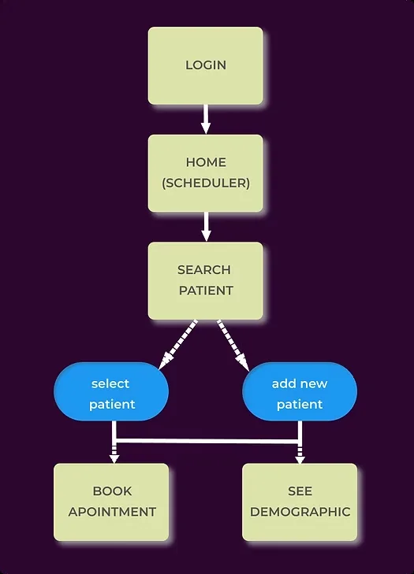
Main front-desk flow
Decision 2
Readable and accessible by default
"The fonts are hard to read" came up directly in research, and AODA compliance was a project goal. So contrast, type size, labels, hint text and error messages went into the components themselves, and every screen built from them inherits the fix.
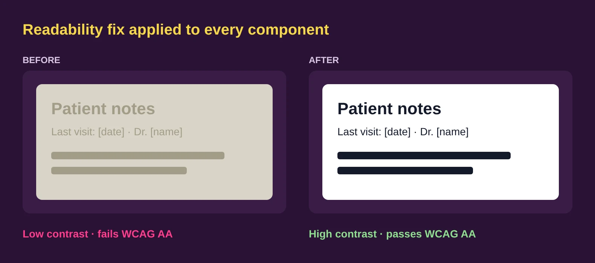
Text contrast, before and after
Decision 3
A design system so 500+ screens stay consistent
With 1,200+ screens across 25+ modules, consistency could not depend on memory. I maintained the style guide and icon set, built screens from shared components in Axure, and wrote Jira user stories so developers built from the same parts.
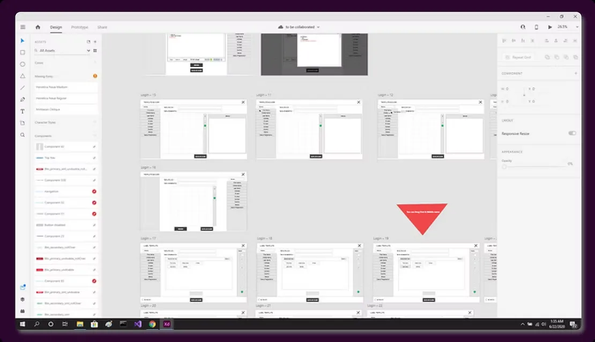
Screens built from shared components in Axure
From paper to prototype
Sketch first, then wire it up
I explored layouts on paper before building clickable prototypes. Below, an early sketch of a collapsible list, and the prototype for the lab reports module.
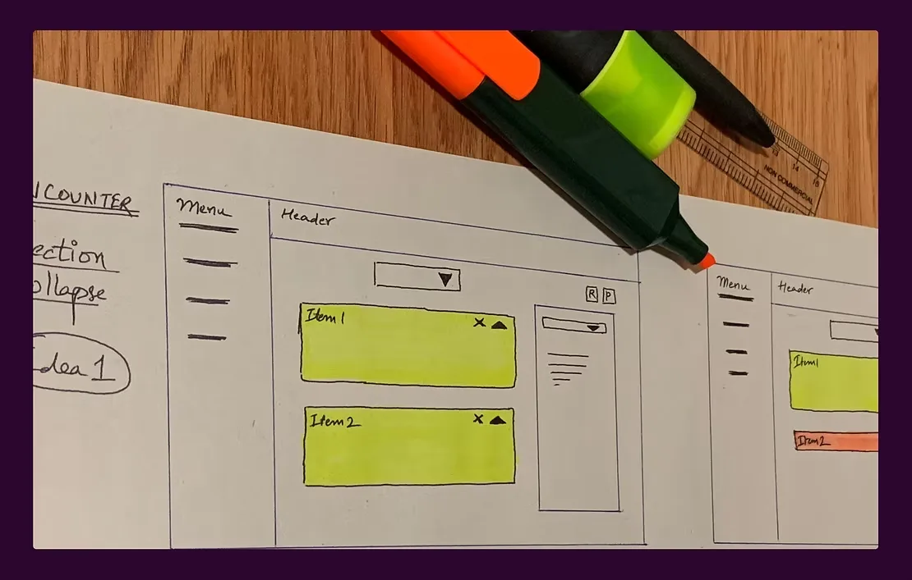
Paper sketch: collapsible list
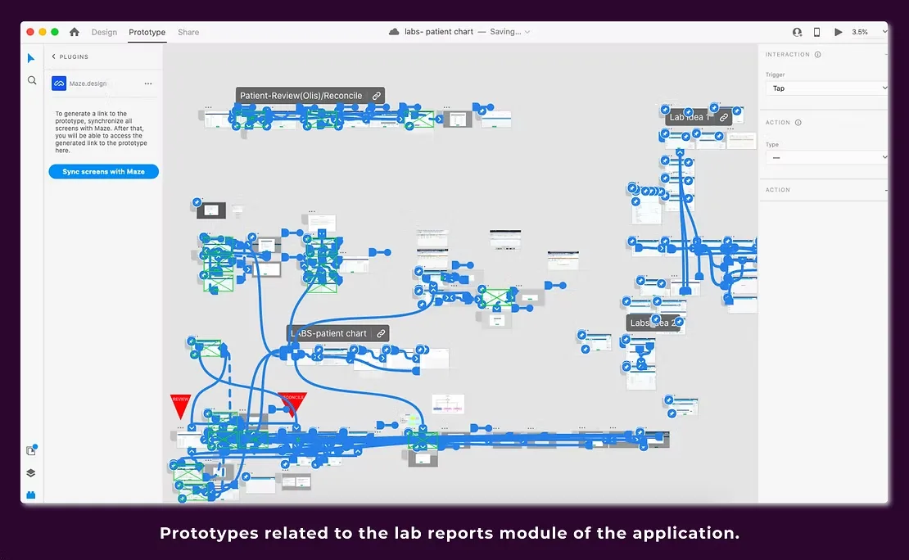
Clickable prototype: lab reports module
Testing
Tested remotely with the people who use it
We ran A/B and usability tests with clinic and hospital staff on Zoom and Maze, read heatmaps to see where attention went, and ran heuristic evaluations before handoff.
83%logged in on the expected path the first time; nobody gave up
6.2 / 7average rating for how easy it was to search for a patient
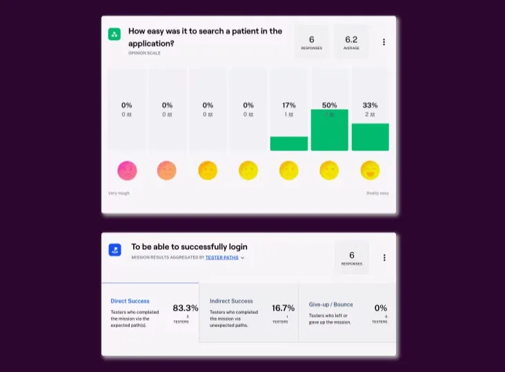
Maze results from 6 testers
Results
What changed
87%average satisfaction across user testing
500+screens I designed, of 1,200+ across 25+ modules
AAaccessibility target met for AODA compliance
Flows took fewer clicks, the information architecture was rearranged so navigation made sense, and icons, button labels, hint text and error messages were rewritten to be clear.
What I learned
Listening is the most important skill to have in a meeting.
Leading design across three disciplines taught me that the best decisions came from hearing developers and analysts out before proposing anything. What I'd do differently: run a larger round of testing before high fidelity. Four interviews and six testers told us a lot, but more clinicians earlier would have caught issues sooner.
References from this project are available on request.
← All workEnterprise SaaS · OpenText · Jan – May 2022
OpenText Core Capture
Keeping key details in view as documents move
OpenText Core Capture uses AI to classify scanned documents and pull out their data. As documents moved through the workflow, the people reviewing them kept losing track of critical information tied to specific parts of a page. I designed the features that fix that.
Waiting on Vishesh: did these features ship? Screens are from the prototype and use sample data.
Problem
Critical details tied to one part of a document got lost as it moved from stage to stage.
My role
UX designer. Research, flows, prototyping, testing and stakeholder reviews.
Tools
Axure RP with OpenText's design system, Figma, Zoom for remote research.
Outcome2
features taken from research to stakeholder approval.
What we heard
Two needs came up in every interview
I interviewed users over Zoom, studied competing capture tools, and grouped the findings with affinity diagrams and journey maps.
Classify fastUsers wanted a quick way to sort scanned documents into the right type.
Pass notes onThey needed to leave notes for the next person in the workflow, pinned to the exact spot that mattered.
Lost contextWithout that, critical information surfaced at one stage and was gone by the next.
Key decisions
Three choices that shaped the feature
Decision 1
Notes live on the document, not beside it
The problem was information tied to one part of a page, so annotations sit on that part. Reviewers can redact, stamp, highlight, add text, draw an arrow or comment, right where the detail is.
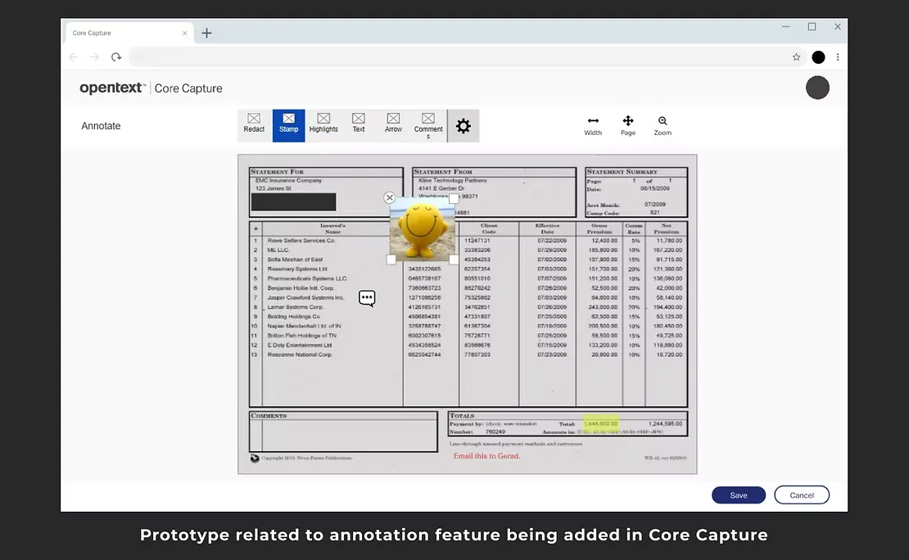
Prototype: annotating a scanned statement
Decision 2
Available at the two stages that need it
The workflow runs from scan and import to organize, review and submit. I made annotation reachable from both Organize and Review, the stages where people spot problems and hand work on.
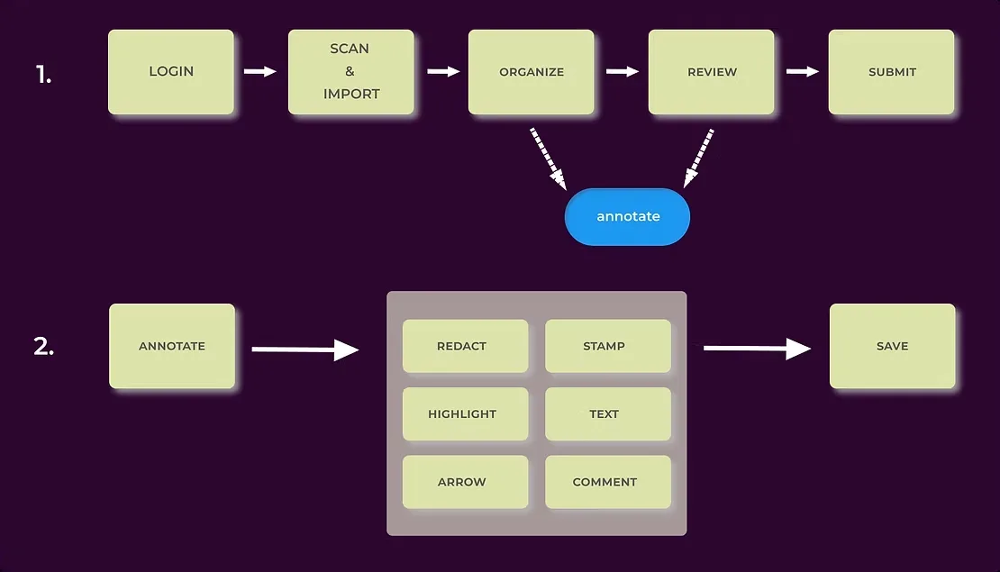
Workflow and annotation tools
Decision 3
Built inside OpenText's design system
I designed with the company's existing components rather than inventing new ones. It sped up prototyping, kept the feature consistent with the rest of the product, and made approval and handoff easier.
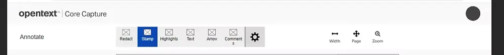
Prototype toolbar, built from OpenText's design system
From paper to prototype
Starting on paper
The first version of the review screen was a pen sketch: documents across the top, the open page below, annotations on the side. From there I built high-fidelity clickable prototypes in Axure, ran remote A/B and usability tests, and refined the design in stakeholder reviews. Live testing was planned for OpenText World.
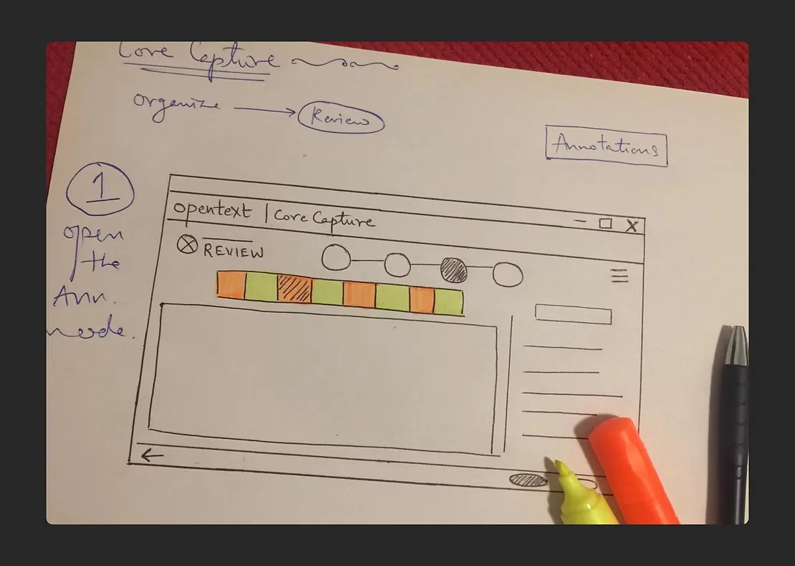
Early paper sketch of the review screen
Results
What changed
2features approved by stakeholders
6annotation tools, pinned to the exact spot on the page
[ ? ]Waiting on Vishesh: shipped, or a measured result
What I learned
A well-defined design system saves time and keeps applications consistent.
Working inside a large company's system taught me to spend my effort on the problem, not on reinventing buttons. What I'd do differently: measure how long it takes reviewers to find a flagged detail before and after, so the impact is a number, not just a good feeling.
References from this project are available on request.
← All workConsumer platform · Isha Foundation · Aug 2022 – Mar 2023
Linga Bhairavi
Rituals booked online, for a global audience
The Linga Bhairavi website buried its content, did not work on phones, and most of its rituals could not be booked online. I led UX for a rebuild that now lets people around the world book and pay for rituals from home.
Waiting on Vishesh: a screenshot of the old site for a before-and-after.
Problem
Information overload, no mobile support, and most rituals only bookable in person.
My role
Team lead and UX designer. Research, flows, wireframes, prototypes and testing.
Goals
Modernize the site, grow paid services, and reach more people.
Outcome35+
rituals now bookable and payable online.
Tools Figma
Who we designed for
Seven interviews, two people to design for
I interviewed seven visitors in person at meditation halls, found four groups of users, and focused on the two the site served least well.
AM
Amy, the seeker29 · history teacher, New York
Wants meditations centred on the feminine, and to learn about Eastern traditions.
Struggles to find authentic stories and people who share her interests.
VS
Vinay, the devotee53 · senior consultant, Mumbai
Wants to book rituals for his family from home, and to know which days are special.
Frustrated by visiting temple offices and filling in forms every time he books.
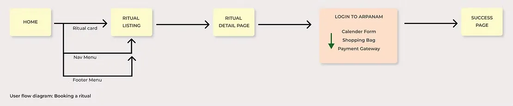
The booking flow, from home page to confirmation
Key decisions
Four choices that shaped the site
Decision 1
Booking built around the lunar calendar
People like Vinay book around auspicious lunar dates, so the calendar is the heart of booking: highlighted dates, then a time slot, then in person or online. I tried several versions of the calendar and form before settling on one.
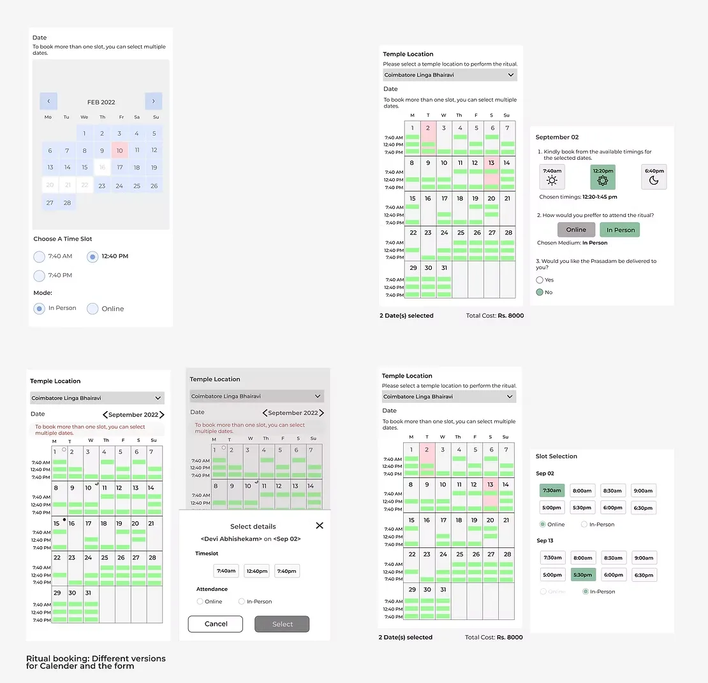
Booking calendar: versions explored
Decision 2
Designed for phones first
The old site did not work on phones or tablets. I took the navigation from a paper sketch to a wireframe to the final visual design, with each section given a clear image and label.
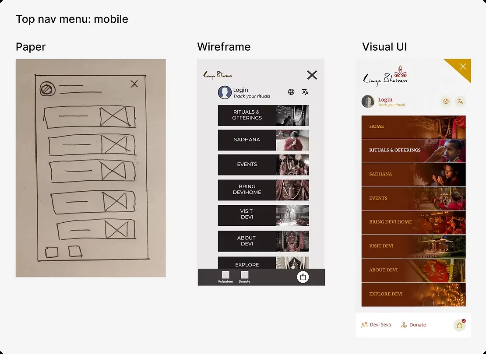
Mobile menu: paper, wireframe, final UI
Decision 3
One card style for every ritual
With dozens of rituals, people needed to compare them at a glance. I explored card layouts and chose one that pairs an image with the essentials and a clear booking button.
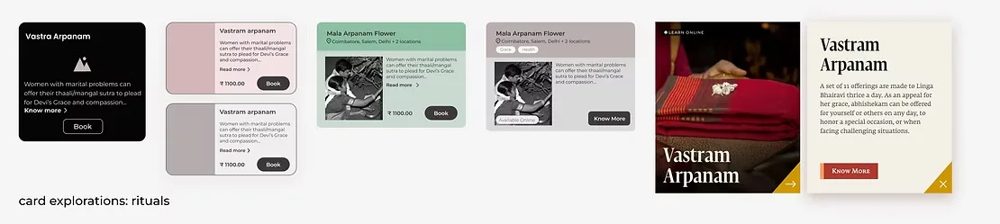
Ritual card explorations
Decision 4
Less is more in the payment flow
Payment is where people drop out. I cut the flow to the information people need to decide (date, time, mode and total cost) and nothing else.
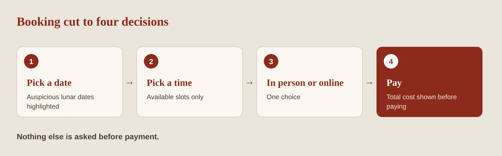
Booking in four steps
Final design
Live at lingabhairavi.org
Wireframes were built in Figma and handed to the visual design team. We ran A/B and usability tests in person, plus heuristic evaluations, before launch.
35+rituals people can now schedule and pay for online
10+annual events open for online booking
500+articles and videos, now easy to find, plus online lessons
What I learned
Less is more in payment flows.
We were lucky to have easy access to users, and it showed: every big decision traces back to something we heard at the meditation halls. What I'd do differently: track bookings and drop-off from launch day, so the redesign's impact on revenue could be measured, not just seen.
References from this project are available on request.
← All workEducation non-profit · Bhakti Academy · Nov 2026 – Feb 2027 · In progress
Bhakti Academy master site
One site for every city, and a front door for temples
Bhakti Academy runs live-in programs in Toronto and Montreal, with more cities planned. Its website was built for one city, students couldn't find dates or costs, and the support office that helps temples start new academies had no home online. I'm leading a single master site that serves every city.
Draft for review: "What I've learned so far" is my suggestion. Rewrite it in your own words.
Problem
A one-city site with no dates or costs, nothing for temples, and a blog search engines can't read.
My role
Project manager and design lead: information architecture, user flows, key design decisions, branding. I sign off design.
Team
Developers (detailed UI and build), city teams, and the BAOGF support office. Weekly reviews.
StatusFeb 2027
launch target. Structure and flows done; wireframes in review.
Tools Claude (AI) for concept wireframes and diagrams, Figma
Constraints
A tight timeline, so structure first
The developers wanted to start building quickly, and the launch date is fixed. Rather than run a full research program, I focused on the parts that are hardest to change later: the site map, the navigation, and the paths to the two most important actions, applying and enquiring.
What we heard
People find us on social media and come to the site to act
I drew on my own experience as a former student and now Program Director, feedback gathered from students, staff and temples, and an audit of the current site.
Found on YouTubeMost people discover Bhakti Academy through a documentary or Instagram, then visit the site only to apply.
No basicsThe current site has no term dates, tuition or schedule, so people message staff to ask.
Temples ask four thingsWho to contact, the budget, how long it takes, and how many rooms they need.
Invisible blogBlog posts on the current site can't be read by search engines, so the site brings in no visitors of its own.
Key decisions
Four choices that shape the site
Decision 1
Choose your city first, not at the end
Today the site splits by city only at "Join". I structured it as shared content written once, one template every city fills in, and a separate section for temples. Visitors pick a city early, so dates, costs and contacts are always local, and a new city needs content, not a redesign.
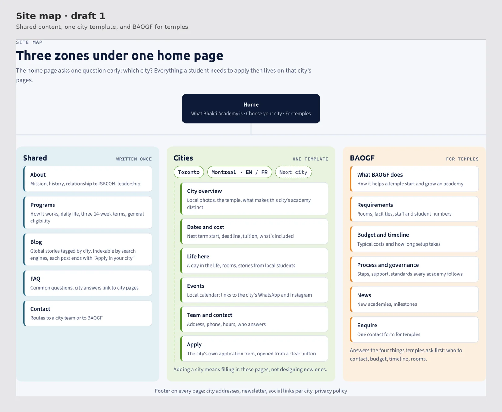
Site map, draft 1
Decision 2
Keep each city's form, design the handoff
Each city relies on its own application form for its back-end data, so replacing the forms wasn't an option. Instead, the site prepares people before the form (dates, cost, eligibility, common questions) and welcomes them back after it with clear next steps.
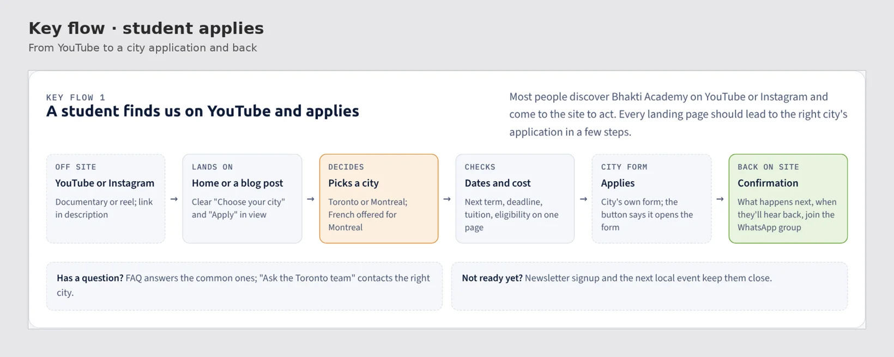
Key flow: a student applies
Decision 3
A separate front door for temples
Temples are a different audience, closer to business clients than students. BAOGF gets its own entry from the home page, and its pages answer the four questions temples ask first before asking them to enquire.
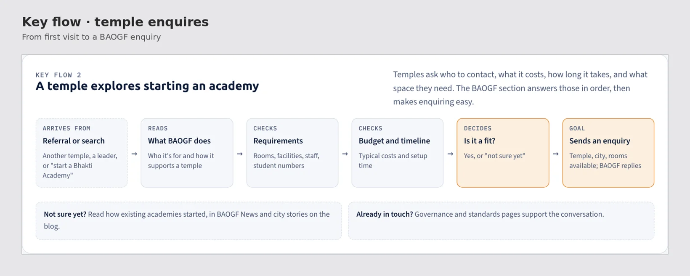
Key flow: a temple enquires
Decision 4
A blog that search engines can read
Instagram and WhatsApp carry most of the conversation today. A global blog of stories from every city, tagged by city and readable by search engines, gives the site its own way to bring people in. Every post ends with "Apply in your city".
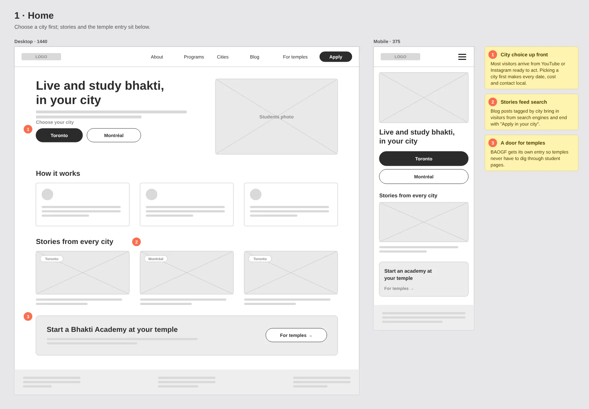
Home page wireframe
Wireframes
Concept wireframes for the build
I used Claude to turn the site map into concept wireframes for the key screens, desktop and mobile, in days rather than weeks. I then reviewed and refined them in Figma, with a note on each decision, so the developers could start building sooner. Tap any one to enlarge it.
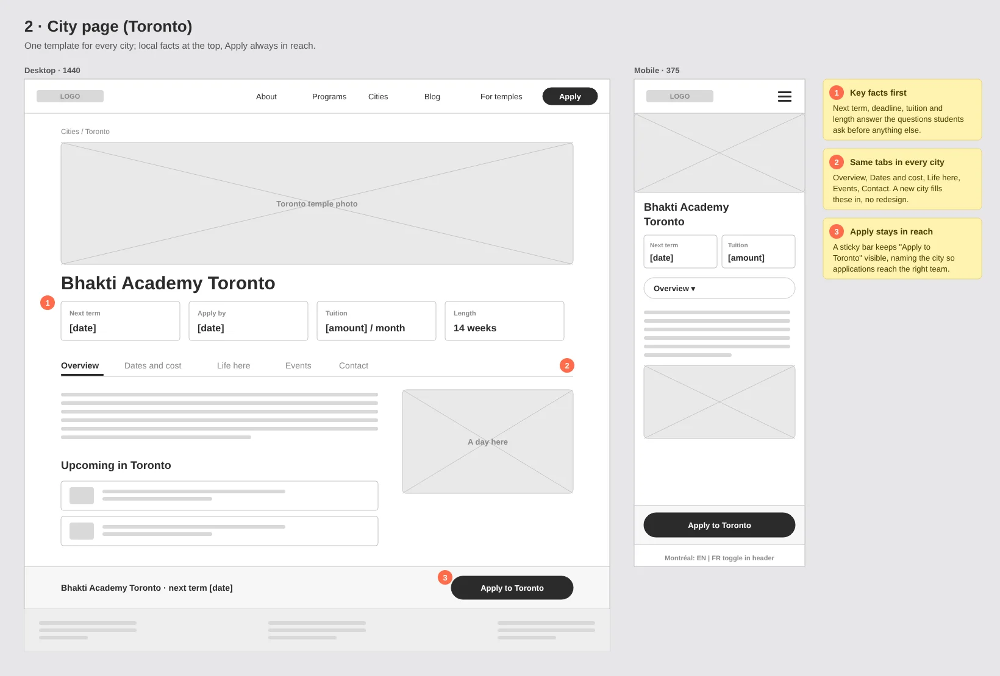
City page (Toronto)
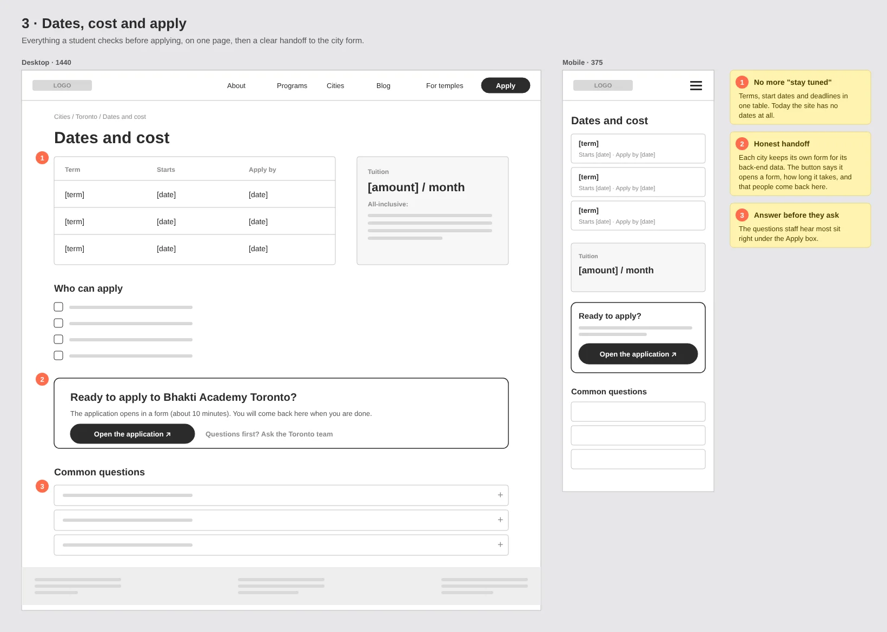
Dates, cost and apply
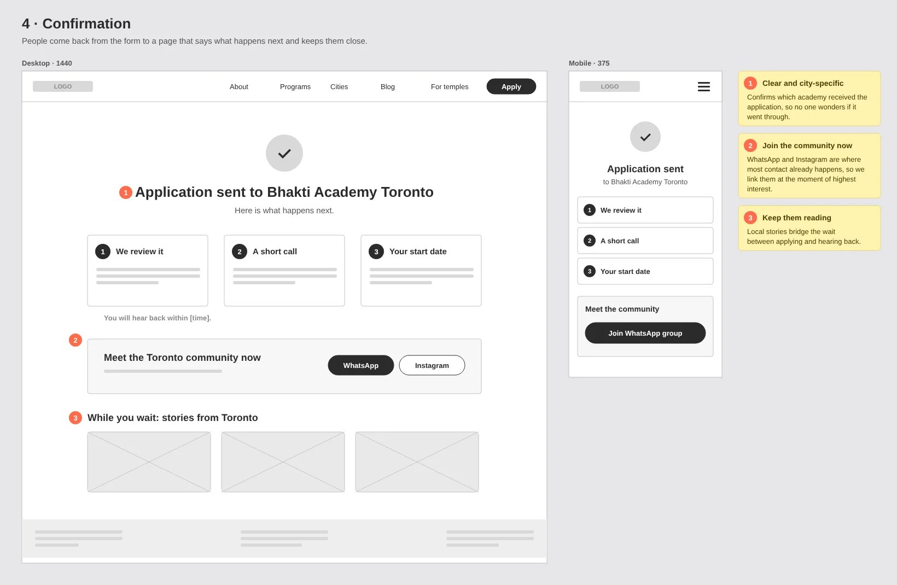
Confirmation after applying
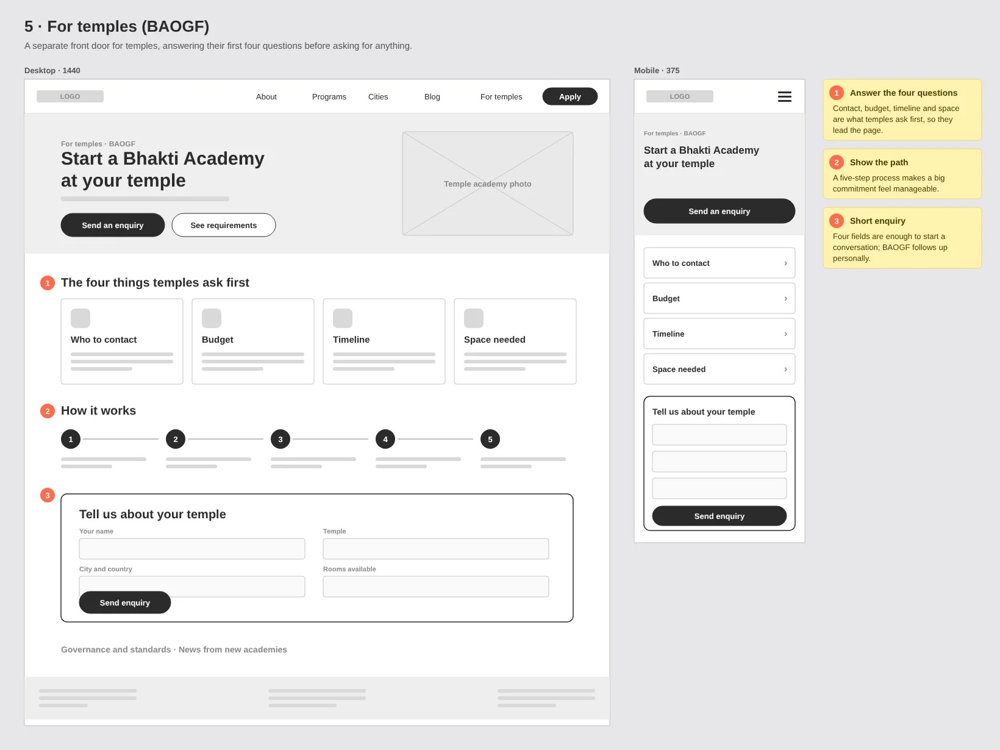
For temples (BAOGF)
What's next
Before and after launch
JanTest the apply and enquiry flows with 5 people while the developers build
BaselineRecord applications per city per term now, to compare after launch
FebLaunch, then add final screens and results to this case study
What I've learned so far
When the timeline forces shortcuts, get the structure right.
Pages and colours are easy to change after launch. The site map, the navigation and the paths to applying are not. Leading the project as both manager and designer has also taught me to make design decisions the team can act on the same week.
References from this project are available on request.